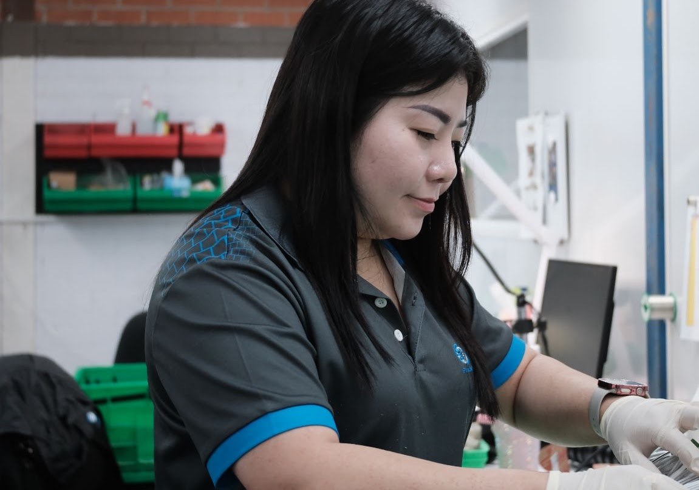
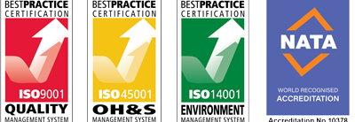
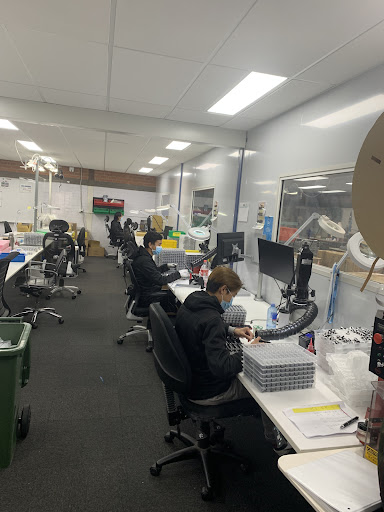

ISO 9001
Certified quality management systems.
Australian-owned electronic manufacturing in Clyde, NSW. Over 25 years of industry expertise, from the first prototype to full-scale production.

Our internationally recognised certifications reflect our commitment to quality, workplace safety, environmental responsibility and technical excellence.
Certified quality management systems.
Certified occupational health and safety management systems.
Certified environmental management systems.
Accreditation supporting our commitment to technical excellence.


Issatec Australia specialises in the design, manufacture, testing, distribution and repair of electronic components and PCB assemblies.
Our facility brings together advanced manufacturing systems and hands-on expertise to produce complex assemblies with accuracy and efficiency.
Rigorous inspection, documentation and traceability procedures support reliable products and consistent manufacturing outcomes.
Explore our projects →Complete electronic manufacturing solutions, combining assembly, inspection and final integration for customers across Australia.
Advanced SMT lines offer vision-assisted component placement and full BGA placement capabilities, supporting prototypes through to high-volume production.
Through-hole assembly forms part of our complete PCB manufacturing service, alongside surface-mount assembly and final product integration.
X-ray inspection provides visibility beneath BGA components to check placement accuracy and identify issues before final production.
Quality is at the core of everything we do. Our ISO-certified management systems guide manufacturing and help deliver cost-effective production with consistent quality.
Tell us about your design, production volumes and manufacturing requirements.